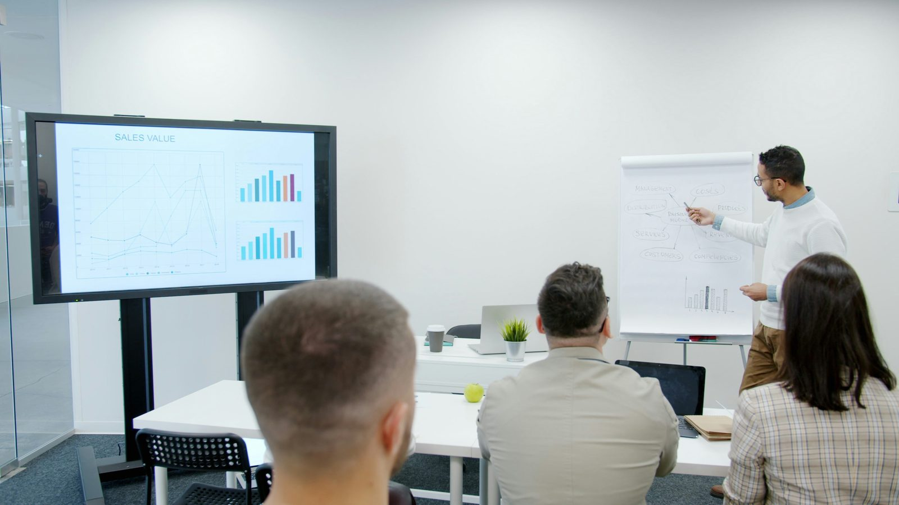

Come Kreios S.r.l. ha trasformato il proprio processo di advisory finanziario con una piattaforma AI che automatizza matching e valutazione documentale.

Kreios S.r.l. opera nel mondo della finanza strutturata, affiancando aziende e imprenditori per identificare la soluzione finanziaria più adatta: fondi di private equity, finanziamenti bancari, operazioni di leasing, gestione finanziaria del ciclo fornitori.
Un lavoro altamente specializzato, con un collo di bottiglia preciso: tutto il lavoro di analisi documentale era manuale. Analizzare un dossier completo richiedeva 3-5 ore per azienda. Il processo di matching con fondi e banche era basato su memoria ed esperienza. Il numero di aziende analizzabili al mese era direttamente limitato dalle ore disponibili del team.
"Ricevevi visure, bilanci, note integrative. Ti sedevi, leggevi, confrontavi con le specifiche del fondo, e decidevi se poteva avere senso. Ore di lavoro per ogni azienda. E spesso la risposta era no."
Altalogik ha sviluppato una piattaforma in due fasi che automatizza l'intero processo di analisi e matching.
Fase 1 — Matching automatico: Kreios carica le schede di ogni fondo e istituto bancario con cui collabora (settori, dimensioni target, requisiti patrimoniali, criteri ESG). Per ogni azienda da valutare vengono caricati visure, bilanci e note integrative. Il sistema estrae i parametri rilevanti e li confronta automaticamente con tutte le schede in piattaforma, restituendo in pochi minuti un elenco di match compatibili ordinati per grado di corrispondenza.
Fase 2 — Valutazione a 360 gradi: la piattaforma analizza simultaneamente finanziabilità bancaria, eleggibilità per operazioni di leasing, accesso a strumenti di supply chain finance (factoring, reverse factoring, anticipo fatture). Calcola inoltre un indice sintetico di bancabilità e identifica i 3-5 driver principali che frenano l'azienda, con azioni concrete e stima dell'impatto atteso.
Il cambiamento di posizionamento: prima Kreios portava ai clienti una risposta su una singola opportunità dopo settimane. Ora porta una fotografia completa della situazione finanziaria con tutte le opzioni disponibili e un piano di miglioramento, già durante il primo incontro.
tempo medio di analisi per azienda: da 3-5 ore a 15-20 minuti
aziende analizzabili al mese: scalabile senza limite di ore disponibili
analisi simultanea su tutti i prodotti finanziari: prima verticale su uno solo
"Prima dicevamo al cliente 'vediamo se sei adatto per questo fondo'. Adesso gli diciamo subito cosa può fare, cosa non può fare e perché. È un altro tipo di conversazione."